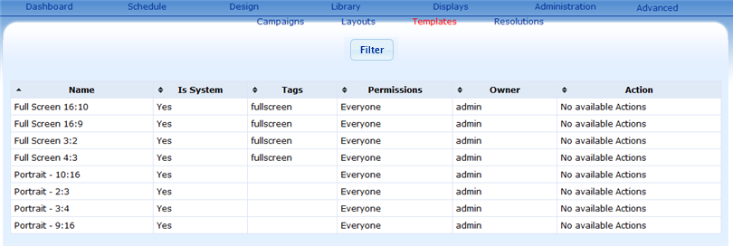

Templates allow a user to save a layouts generic properties so that it can be used to create the same layout with different content. This allows you to create a library of 'Pre-built' layouts for your system.
Xibo default templates provided are shown below. The dimensions follow commonly available monitor display sizes.

Refer to Template Resolution on how to add custom resoluton.